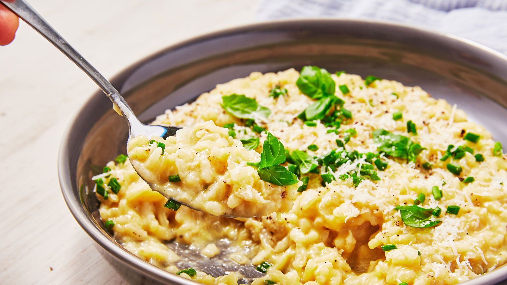

Risotto (/rɪˈzɒtoʊ/, Italian: [riˈzɔtto, -ˈsɔt-], from riso meaning "rice")[1] is a northern Italian rice dish cooked with broth until it reaches a creamy consistency. The broth can be derived from meat, fish, or vegetables. Many types of risotto contain butter, onion, white wine, and Parmigiano-Reggiano. It is one of the most common ways of cooking rice in Italy. Saffron was originally used for flavour and its signature yellow colour.[2][3] Risotto in Italy is often a first course served before the main course, but risotto alla milanese is often served with ossobuco alla milanese as a main course.[4]
